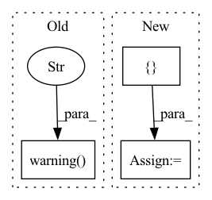

Pattern ID :18273

Before Change
stream_ext = os.path.splitext(stream.default_filename)[1]
if ext != stream_ext:
if not quiet:
logger.warning(
"Unable to find a "%s" stream for "%s" downloading "%s" "
"instead",
ext,
url,
stream_ext,
)
video_path = root + stream_ext
if not quiet and only_progressive and not stream.is_progressive:
After Change
) = task
error = None
warnings = []
try:
pytube_video = pytube.YouTube(url)
_validate_video(pytube_video)
In pattern: SUPERPATTERN
Frequency: 5
Non-data size: 3
Instances
Fragment ID: 59920610
Project Name: voxel51/fiftyone
Commit Name: 59d9f8932640d79ae4a0fa969a3c2731ddf96021
Time: 2022-02-02
Author: brimoor@umich.edu
File Name: fiftyone/utils/youtube.py
M Class Name: AnonimousClass
N Class Name: AnonimousClass
M Method Name: _do_download(1)
N Method Name: _do_download(1)
M Parent Class:
N Parent Class:
M File Name: fiftyone/utils/youtube.py
N File Name: fiftyone/utils/youtube.py
M Start Line: 306
M End Line: 377
N Start Line: 315
N End Line: 385
'>
Before Change
try:
trainer.fit(model, training_dataloader, validation_dataloader)
except KeyboardInterrupt:
logger.warning("[ctrl+c] Exiting gracefully.")
pass
// Saving predictions to file
results = get_predictions(
After Change
}
// Configuration
config = {
"db": "/groups/icecube/petersen/GraphNetDatabaseRepository/Leon_MC_data/last_one_lvl3MC.db",
"pulsemap": "SplitInIcePulses",
"batch_size": 512,
"num_workers": 10,
"accelerator": "cpu", // gpu
"devices": 1, // [0],
"target": "pid",
"classification": class_options,
"n_epochs": 10,
"patience": 5,
}
archive = "/groups/icecube/petersen/GraphNetDatabaseRepository/example_results/train_classification_model"
run_name = "dynedge_{}_example".format(config["target"])
// Log configuration to W&B
'>
Fragment ID: 59920615
Project Name: graphnet-team/graphnet
Commit Name: 737bcecc71b5c72cc738bbe2c112e59d86e949dc
Time: 2022-11-21
Author: Volumunox@gmail.com
File Name: examples/train_classification_model.py
M Class Name: AnonimousClass
N Class Name: AnonimousClass
M Method Name: main(0)
N Method Name: main(0)
M Parent Class:
N Parent Class:
M File Name: examples/train_classification_model.py
N File Name: examples/train_classification_model.py
M Start Line: 55
M End Line: 177
N Start Line: 65
N End Line: 188
'>
Before Change
elif isinstance(result, float):
float_list = [result]
else:
self._logger.warning(f"Failed when working out score of metric {metric}.")
continue
if len(float_list) != 0:
if score is None:
score = 0.
After Change
if len(float_list) != 0:
score += sum(float_list) / len(float_list)
float_list = []
return score
def _loss_all_reduce(self):
'>
Fragment ID: 59920613
Project Name: rucaibox/textbox
Commit Name: a823ff8def5622cdd534036d366f1875188610de
Time: 2022-07-12
Author: 1020030101@qq.com
File Name: textbox/utils/dashboard.py
M Class Name: EpochTracker
N Class Name: EpochTracker
M Method Name: calc_score(2)
N Method Name: calc_score(2)
M Parent Class:
N Parent Class:
M File Name: textbox/utils/dashboard.py
N File Name: textbox/utils/dashboard.py
M Start Line: 214
M End Line: 233
N Start Line: 220
N End Line: 238
'>
Before Change
)
if len(index_group.cache_managers) > 1:
logger.warning(
f"multiple cache managers detected for {self.namespace()}. This may mean you are loading"
f"multiple instances of a model, which is memory inefficient. In addition, this instance will"
f" reuse the model data associated with the first detected cache manager. This may have "
f"unintended consequences."
)
self.top_n = top_n
self.index_group = index_group
self.index_group.load()
After Change
self.score_cutoffs = score_cutoffs
self.top_n = top_n
self.indices = indices
self.entity_class_to_indices: Dict[str, Set[EmbeddingIndex]] = {}
self.load_or_build_caches()
self.lookup_cache = EntityLinkingLookupCache(lookup_cache_size)
'>
Fragment ID: 59920621
Project Name: astrazeneca/kazu
Commit Name: 0d7573d82ab330ba148a39628c809c1d20621b3b
Time: 2022-11-30
Author: richard.jackson4@astrazeneca.com
File Name: kazu/steps/linking/sapbert.py
M Class Name: SapBertForEntityLinkingStep
N Class Name: SapBertForEntityLinkingStep
M Method Name: __init__(12)
N Method Name: __init__(8)
M Parent Class: BaseStep
N Parent Class: BaseStep
M File Name: kazu/steps/linking/sapbert.py
N File Name: kazu/steps/linking/sapbert.py
M Start Line: 63
M End Line: 91
N Start Line: 37
N End Line: 73